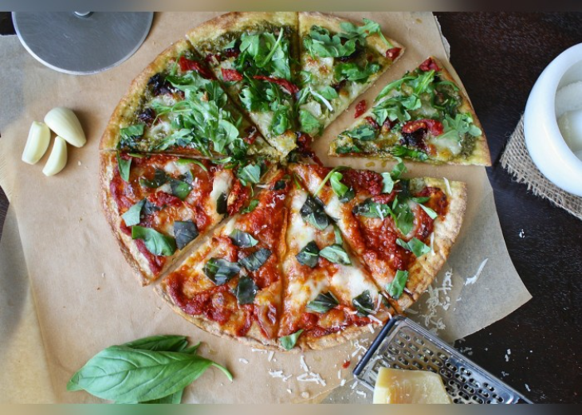

Nuestros restaurantes han sido muchas veces galardonados durante los años de operación que tenemos. Uno de los más importantes es el “Top Italian Restaurants” de la casa italiana Gambero Rosso donde se evalúan más de 500 restaurantes a nivel mundial y con mucho orgullo hemos sido parte del top 10 durante los últimos 5 anos. Esto sin duda coloca nuestra cadena de restaurantes en el mapa mundial y a nuestro increíble personal.
En nuestros restaurantes, vas a poder disfrutar de diferentes tipos de platos que provienen directamente de la cocina tradicional italiana. Cada receta, ingrediente, medida, porción, ha sido transmitido por generaciones y generaciones para finalmente poder ser ofrecido en nuestro restaurante. Contamos con más de 20 platillos tradicionales, incluidos pastas, pizzas y postres. En nuestros restaurantes, vas a poder tener una experiencia inigualable y deliciosa como si estuvieras en tierras italianas.

Nuestros ingredientes son 100% naturales y nacionales. Durante su cultivo, nuestros proveedores se encargan de la siembra y cosecha mientras que nuestros inspectores llevan a cabo visitas mensuales donde se supervisa y analiza desde el cultivo de los ingredientes hasta la forma en que se almacenan los mismos. Es importante mencionar que no se utilizan ningún tipo de químico durante ninguna parte del proceso, garantizando así un sabor único.
Nuestros chefs usualmente asisten a conferencias internacionales donde se entrenan, actualizan y practican las últimas tendencias en comida Italia. Así también, nuestros chefs con más experiencia se encargan de entrenar a los nuevos chefs que ingresen a la cadena de restaurantes, manteniendo una constancia en nuestros platos y sabores sin importar la sede en la que nos visites.